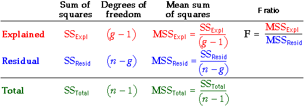

Hypothesis test
The coefficient of determination, R2, summarises the relative amounts of explained and unexplained variation. However even if the factor had no effect on the response, the randomness of data would result in some explained variation and a non-zero R2.
Formally, we want to test whether the level means are the same:
H0 : µi = µj for
all i and j
HA: µi ≠ µj for
at least some i, j
This hypothesis test is based on the two sums of squares from which R2 was calculated but uses them in a different way.
You should use computer software to evaluate the p-value for the test, but we
will briefly describe some of the steps.
Mean sums of squares
The first step in evaluating the p-value for the test is to divide each of
the three sums of squares by a value called its degrees of freedom
to obtain a mean sum of squares.
 |
The mean total sum of squares is the
sample variance of the response (ignoring the treatments). |
 |
The mean within-treatment sum of squares
is the pooled estimate of the common response variance within each treatment. |
 |
The mean between-treatment sum of squares
is harder to directly interpret. |
Note that the within-treatment and between-treatment degrees of freedom (the denominators)
add to give the total degrees of freedom.
F ratio and p-value
The test statistic is the ratio of the between- and within-treatment mean sums
of square. It is called an F-ratio.

This test statistic compares between- and within-treatment variation:
- The further apart the treatment means, the bigger the between-treatment mean sum of
squares and hence the higher the F-ratio.
- The lower the variation within each treatment, the smaller the within-treatment mean
sum of squares and hence the higher the F-ratio.
Large values of F suggest that H0 does not hold —
that the level means are not the same.
The p-value for the test gives the probability of such a high F ratio if H0
is true (all treatment means are the same). It is based on a standard distribution
called an F distribution and is interpreted in the same way as
other p-values.
The closer the p-value to zero, the stronger the evidence
that H0 does not hold.
Analysis of variance table
The calculations are usually presented in a table called an analysis
of variance table. (This is often abbreviated to an anova table.)

Illustration of calculations
The dot plots on the left below show results from a completely randomised experiment with 3 replicates at each of 4 factor levels.
The slider adjusts the relative size of the between-treatment and within-treatment
sums of squares. Observe how this affects the p-value for the test.
- The greater the proportion of explained variation, the larger the F-ratio and
the closer the p-value becomes to zero.
Use the pop-up menu to increase the number of replicates and observe that a smaller
amount of explained variation is needed to obtain a small p-value (and hence strong
evidence that the underlying treatment means are different).